2 Mathematics
2.1 Algebra
(reference 2.1)
2.1.1 Laws
| Commutative | \[\begin{align} a+b &= b+a\\ ab &= ba \end{align}\] |
| Associative | \[a+(b+c) = (a+b)+c\] |
| Distributive | \[a(b+c) = ab+ac\] |
2.1.2 Identities
| Exponents | Logarithms2 |
|---|---|
| \[a^x a^y = a^{x+y}\] | \[log_b{b} = 1\] |
| \[\left( ab \right) ^x = a^x b^x \] | \[log_b{1} = 0\] |
| \[\left( a^x \right) y = a^xy \] | \[ log_b \left( MN \right) = log_b{M} + log_b{N}\] |
| \[a^{mn} = \left( a^m \right) ^n \] | \[log_b \left( \frac{M}{N} \right) = log_b{M} - log_b{N}\] |
| \[a^0 = 1\]3 | \[log_b \left( M^p \right) = p log_b{M}\] |
| \[a^{-x} = \frac{1}{a^x} = \left( \frac{1}{a} \right)\] | \[log_b \left( \frac{1}{M} \right) = -log_b{M} \] |
| \[ \frac{a^x}{a^y} = a^{x-y} \] | \[ log_b{\sqrt[q]{M}} = \frac{1}{q} log_b{M} \] |
| \[ \sqrt[x]{ab} = \left( \sqrt[x]{a} \right) \left( \sqrt[x]{b} \right) \] | \[ log_b{M} = \left(log_c{M} \right) \left(log_b{c} \right)= \frac{log_c{M}}{log_c{b}} \] |
| \[ a^{\frac{x}{y}} = \sqrt[y]{a^x} = \left( \sqrt[y]{a} \right)^x \] | |
| \[ a^{\frac{1}{y}} = \sqrt[y]{a} \] | |
| \[ \left( \sqrt[x]{a} \right) \left( \sqrt[y]{a} \right) = a^{\left( \frac{1}{x} + \frac{1}{y} \right)} = \sqrt[xy]{a^{x+y}} \] | |
| \[ \sqrt{a} + \sqrt{b} = \sqrt{a + b + 2\sqrt{ab}}\] |
Examples: \[ \begin{array}{lllll} log (6.54) = .8156 &&&&\\ & log (6540) &= log (6.54 \times 10^3 ) &= .8156 + 3 &= \fbox{3.8156}&\\ & log (.6540) &= log (6.54 \times 10^{-1}) &= .8156 - 1 &= \fbox{9.8156 - 10}&\\ & log (.0006540) &= log (6.54 \times 10^{-4}) &= .8156 - 4 &= \fbox{6.8156 - 10}& \end{array} \]
\[ \begin{array}{lllll} \text{calculate } 68.31 \times .2754 &&&&\\ &log (68.31) &= 1.8354&&\\ &log (.2754) &= -.56&&\\ &1.8354 +(-.56) &= 1.2745&&\\ &log^{-1} (1.2745) &= \fbox{18.81}&& \end{array} \]
\[ \begin{array}{lllll} \text{calculate } (.6831)^{1.53} &&&&\\ & log (.6831) &= -.1655&&\\ & 1.53 \times -.1655 &= -.253&&\\ & log^{-1} (-.253) &= \fbox{.5582}&& \end{array} \]
\[ \begin{array}{lllll} \text{calculate } (.6831)^{\frac{1}{5}} &&&&\\ & log (.6831) &= -.1655&&\\ & \frac{1}{5} \times -.1655 &= -.0331&&\\ & log^{-1} (-.0331) &= \fbox{.9266}&& \end{array} \]
\[ \begin{array}{lllll} \text{solve for \(x\) in \(.6931^x = 27.54\) }&&&&\\ & log (.6931^x) &= log (27.54)&&\\ & x log (.6931) &= log (27.54)&&\\ & x &= \frac{log (27.54 )}{log (.6931)}&&\\ & x &= \frac{1.44}{-.1655} &= \fbox{-8.701} \end{array} \]
2.1.3 Equations
Quadratic Equation
\[ax^2 + bx + c =0\]
Two roots, both real or both complex
\[x_{1,2} = \frac{-b \pm \sqrt{b^2 - 4ac}}{2a}\]
Cubic Equation
\[y^3 + py^2 + qy + r = 0\]
Three roots, all real or one real & two complex
Let \(y = x - \frac{p}{3}\) to rewrite equation in form of \(x^3 + ax + b = 0\)
where \(a = \frac{3q - p^2}{3}\) and \(b = \frac{2p^3 - 9pq - 27r}{27}\)
let
\[ A = \sqrt[3]{-\frac{b}{2} + \sqrt{\frac{b^2}{4} + \frac{a^3}{27}}}\]
and
\[B =\sqrt[3]{-\frac{b}{2} - \sqrt{\frac{b^2}{4} + \frac{a^3}{27}}} \]
then
\[ \begin{align} x_1 &= A + B\\ x_2 &= \frac{-(A + B)}{2} + \frac{\sqrt{-3}}{2} (A - B)\\ x_3 &= \frac{-(A + B)}{2} - \frac{\sqrt{-3}}{2} (A - B) \end{align} \]
Special cases:
If \(\frac{b^2}{4} + \frac{a^3}{27} < 0\) , then the real roots are
\[x_{1,2,3} = 2 \sqrt{\frac{-a}{3}} cos \left( \frac{\phi}{3} + 120^{\circ} k \right)\]
where \(k = 0,1,2\)
and
\[cos\phi = + \sqrt{\frac{ \frac{b^2}{4} }{ \frac{-a^3}{27} }} \;\;\;\text{if}\; b < 0\]
or
\[cos\phi = - \sqrt{\frac{ \frac{b^2}{4} }{ \frac{-a^3}{27} }} \;\;\;\text{if}\; b > 0\]
If \(\frac{b^2}{4} + \frac{a^3}{27} > 0\) and \(a > 0\) , the single real root is
\[x = 2 \sqrt{\frac{a}{3}} cot \left( 2\phi \right)\]
where \(tan\phi = \sqrt[3]{tan\psi}\)
and
\[ cot \left( 2\psi \right) = + \sqrt{\frac{ \frac{b^2}{4} }{ \frac{-a^3}{27} }} \;\;\;\text{if}\; b < 0\]
or
\[ cot \left( 2\psi \right) = - \sqrt{\frac{ \frac{b^2}{4} }{ \frac{-a^3}{27} }} \;\;\;\text{if}\; b < 0\]
If \(\frac{b^2}{4} + \frac{a^3}{27} = 0\), the three real roots are
\[ x_{1} = -2 \sqrt{\frac{-a}{3}}, \; x_{2,3} = +\sqrt{\frac{-a}{3}} \;\;\; \text{if} \; b > 0 \]
or
\[ x_{1} = +2 \sqrt{\frac{-a}{3}}, \; x_{2,3} = -\sqrt{\frac{-a}{3}} \;\;\; \text{if} \; b < 0 \]
Quartic (biquadratic) Equation
For
\[y^4 + py^3 + qy^2 + ry + s = 0\]
let \(y = x - \frac{p}{4}\) to rewrite equation as
\[x^4 + ax^2 + bx + c = 0\]
let \(l\), \(m\), \(n\) denote roots of the following resolvent cubic:
\[ t^3 + \frac{1}{2} at^2 + \frac{1}{16} \left( a^2 - 4c \right) t - \frac{1}{64}b^2 = 0 \]
The roots of the quartic are
\[ x_{1} = + \sqrt{l} + \sqrt{m} + \sqrt{n} \] \[ x_{2} = + \sqrt{l} - \sqrt{m} - \sqrt{n} \] \[ x_{3} = - \sqrt{l} + \sqrt{m} - \sqrt{n} \] \[ x_{4} = - \sqrt{l} - \sqrt{m} + \sqrt{n} \]
2.1.4 Interest And Annuities
(reference 2.3)
Amount:
\(P\) principal at \(i\) interest for \(n\) time accumulates to amount \(A_{n}\).
Simple interest:
\[A_{n} = P(1 + ni)\]
at interest compounded each \(n\) interval:
\[A_{n} = P(1 + i)^n \]
at interest compounded \(q\) times per \(n\) interval:
\[A_{n} = P(1 + \frac{r}{q})^{nq} \]
where \(r\) is the nominal (quoted) rate of interest
Effective Interest:
The rate per time period at which interest is earned during each period is called the effective rate \(i\).
\[i = \left( 1 + \frac{r}{q} \right)^q -1\]
Solve above equations for \(P\) to determine investment required now to accumulate to amount \(A_{n}\)
True discount,
\[D = A_{n} - P\]
Annuities:
rent \(R\) is consistent payment at each period \(n\)
let
\[s_n \equiv \frac{\left( 1 + i \right)^n - 1}{i}\]
and let
\[r_n \equiv \frac{1 - \left( 1 + i \right)^{-n}}{i} \]
then \(A_n = R\,s_{n}\)
or
\[n = \frac{\log \left( A_n + R \right) - \log R }{\log \left(1 + i \right)} \]
Present value of an annuity, \(A\) is the sum of the present values of all the future payments. \(A = R\,r_{n}\)
Monthly interest rate = \(MIR = \frac{ \text{annual interest rate} }{12}\)
Month Term = # months in loan
Monthly payment = \(\left[ \text{amount financed} \right] \left[ \frac{MIR}{1 - \left( 1 + MIR \right)^{-\#months}} \right]\)
Final value (\(FV\)) of an investment is a function of the initial principal invested (P), interest rate (\(r\) expressed as \(.05\) for \(5%\), \(.1\) for \(10%\), etc.), time invested (\(Y\) typically years), and compounding periods per year (\(n\) typically \(n = 1\) for yearly or \(n = 12\) for monthly).
\[FV = P (1 + \frac{r}{n})^{Y_n}\]
2.2 Geometry
(references 2.1, 2.2)
General definitions
| Symbol | Definition |
|---|---|
| \(A\) | area |
| \(a\) | side length |
| \(b\) | base length |
| \(C\) | circumference |
| \(D\) | diameter |
| \(h\) | height |
| \(n\) | number of sides |
| \(R\) | radius |
| \(V\) | volume |
| \(x, y, z\) | distances along orthogonal coordinate system |
| \(\beta\) | interior vertex angle |
Triangle
\[ \begin{align} A &= \frac{bh}{2}\\ \text{sum of interior angles} &= 180^{\circ} \end{align} \]
Rectangle
\[ \begin{align} A &= bh\\ \text{sum of interior angles} &= 360^{\circ} \end{align} \]
Parallelogram (opposite sides parallel)
\[ A = ah = ab \sin \beta \]
Trapezoid (4 sides, 2 parallel)
\[ A = \frac{h \left(a + b \right)}{2} \]
Pentagon, Hexagon, and other \(n\)-sided Polygons
\[\begin{align} A &= \frac{1}{4} n a^2 \cot \left( \frac{180^{\circ}}{n} \right) \\ R &= \text{radius of circumscribed circle} = \frac{1}{2} a^2 \csc \left( \frac{180^{\circ}}{n} \right) \\ r &= \text{radius of inscribed circle} = \frac{1}{2} a \cot \left( \frac{180^{\circ}}{n} \right) \\ \beta &= 180^{\circ} - \frac{360^{\circ}}{n} \\ \text{sum of interior angles} &= n 180^{\circ} - 360^{\circ} \\ \end{align}\]
Circle
\[\begin{align} A &= \pi R^2 \\ C &= 2 \pi R = \pi D \\ \text{perimeter of n-sided polygon inscribed within a circle} &= 2 n R \sin \left(\frac{\pi}{n} \right) \\ \text{area of circumscribed polygon} &= n R^2 \tan \left( \frac{\pi}{n} \right) \\ \text{area of inscribed polygon} &= \frac{1}{2} n R^2 \sin \left( \frac{2\pi}{n} \right) \\ \text{equation for a circle with center at (h,k):} \\ R^2 &= \left(x-h \right)^2 + \left(y-k \right)^2 \\ \end{align}\]
Ellipse
\[\begin{align} f &= \text{semimajor axis} \\ g &= \text{semiminor axis} \\ e &= \text{eccentricity} = \frac{ \sqrt{f^2 -g^2} }{f} \\ A &= \pi e f \\ \text{equation for ellipse with center at (h,k):} \\ \frac{(x-h)^2 }{f^2} + \frac{(y-k)^2}{g^2} &= 1 \text{ if major axis along x-axis} \\ \text{or } \frac{(y-k)^2 }{f^2} + \frac{(x-h)^2}{g^2} &= 1 \text{ if major axis along y-axis} \\ \text{distance from center to either focus} &= \sqrt{f^2 -g^2} \\ \text{latus rectum} &= \frac{2g^2}{a} \\ \end{align}\]
Parabola
\[\begin{align} p &= \text{distance from vertex to focus} \\ e &= \text{eccentricity} = 1 \\ \text{equation for parabola with vertex at (h,k), focus at (h+p,k):} \\ (y-k)^2 = 4j(x-h) \text{ if } j > 0 \\ \text{equation for parabola with vertex at (h,k), focus at (h,k+p):} \\ (x-h)^2 = 4j(y-k) \text{ if } j < 0 \\ \end{align}\]

Parabola Diagram
Hyperbola
\[\begin{align} p &= \text{distance between center and vertex} \\ q &= \text{distance between center and conjugate axis} \\ e &= \text{eccentricity} = \frac{ \sqrt{p^2 +q^2} }{p} \\ \text{equation for hyperbola centered at (h, k):} \\ \frac{(x-h)^2}{p^2} - \frac{(y-k)^2}{q^2} &= 1 \text{ if asymptotes slopes} = \pm \frac{q}{p} \\ \text{or } \frac{(y-k)^2}{p^2} - \frac{(x-h)^2}{q^2} &= 1 \text{ if asymptotes slopes} = \pm \frac{p}{q} \\ \end{align}\]

Hyperbola Diagram
Sphere
\[\begin{align} A &= 4 \pi R^2 \\ V &= \frac{4}{3} \pi R^3 \\ \text{equation for sphere centered at origin:} \\ x^2 + y^2 + z^2 &= R^2 \\ \end{align}\]
Torus
\[\begin{align} \rho &= \text{smaller radius} \\ A &= 4 \pi ^2 R \rho \\ V &= 2 \pi ^2 R \rho^2 \\ \end{align}\]
2.3 Trigonometery (raw)
(references 2.1, 2.2)
For any right triangle with hypotenuse h, an acute angle α, side length o opposite from α, and side length a adjacent to α, the following terms are defined:
sine α = sin α = o/h
cosine α = cos α = a/h
tangent α = tan α = o/a = sin α /cos α
cotangent α = cot α = ctn α = a/o = 1/tan α = cos α /sin α
secant α = sec α = h/a = 1/cos α
cosecant α = csc α = h/o = 1/sin α
exsecant α = exsec α = sec α -1
versine α = vers α = 1-cos α
coversine α = covers α = 1-sin α
haversine α = hav α = (vers α )/2

also defined are the following…
hyperbolic sine of x = sinh x = (e^x – e^{-x} )/2
hyperbolic cosine of x = cosh x = (e^x + e^{-x} )/2
hyperbolic tangent of x = tanh x = sinh x/cosh x
csch x = 1/sinh x
sech x = 1/cosh x
coth x = 1/tanh x
IDENTITIES
Pythagorean Identities:
sin^2 α + cos^2 α = 1
1 + tan^2 α = sec^2 α
1+ cot^2 α = csc^2 α
Half Angle Identities:
sin \[α/2\] = +/- \[(1 - cos α)/2\]1/2
(negative if \[α/2\] is in quadrant III or IV)
cos \[α/2\] = +/- \[(1 + cos α)/2\]1/2
(negative if \[α/2\] is in quadrant II or III)
tan \[α/2\] = +/- \[(1 - cos α)/(1+cos α)\]1/2
(negative if \[α/2\] is in quadrant II or IV)
Double-Angle Identities
sin 2α = 2sin α cos α
cos 2α = 2cos^2 α –1 = 1-2sin^2 α = cos^2 α - sin^2 α
tan 2α = 2tan α /\[1-tan^2 α\]
n –Angle Identities:
sin 3α == 3sin α – 4sin^3 α
cos 3α = 4cos^3 α – 3cos α
sin nα = 2sin (n-1)α cos α – sin (n-2)α
cos nα = 2cos (n-1)α cos α – cos (n-2)α
Two-Angle Identities:
sin (α+β) = sin α cos β + cos α sin β
cos (α+β) = cos α cos β – sin α sin β
tan (α+β) = \[tan α + tan β\]/\[1- tan α tan β\]
sin (α-β) = sin α cos β - cos α sin β
cos (α-β) = cos α cos β + sin α sin β
tan (α-β) = \[tan α - tan β\]/\[1+ tan α tan β\]
Sum and Difference Identities:
sin α + sin β = 2sin \[(α+β)/2\] cos \[(α-β)/2\]
sin α – sin β = 2cos{(α+ β)/2] sin {(α- β)/2]
cos α+ cos β = 2cos \[(α+β)/2\] sin \[(α-β)/2\]
cos α -cos β = -2cos \[(α+β)/2\] sin \[(α-β)/2\]
tan α + tan β = \[sin (α + β)\]/\[cos α cos β\]
cot α + cot β = \[sin (α + β)\]/\[sin α sin β\]
tan α - tan β = \[sin (α - β)\]/\[cos α cos β\]
cot α - cot β = -\[sin (α - β)\]/\[sin α sin β\]
sin^2 α – sin^2 β = sin (α+β) sin (α-β)
cos^2 α – cos^2 β = -sin (α+β) sin (α-β)
cos^2 α – sin^2 β = cos (α+β) cos (α-β)
Power Identities:
sin α sin β = \[cos (α-β) - cos (α+β)\]/2
cos α cos β = \[cos (α-β) + cos (α+β)\]/2
sin α cos β = \[sin (α+β) + sin (α-β)\]/2
cos α sin β = \[sin (α+β) - sin (α-β)\]/2
tan α cot α = sin α csc α = cos α sec α = 1
sin^2 α = \[1-cos2α\]/2
cos^2 α= \[1+cos2α\]/2
sin^3 α = \[3 sin α-- sin 3α\]/4
cos^3 α = \[3 cos α + cos 3α\]/4
sin^4 α = \[3 - 4cos 2α + cos 4α\]/8
cos^4 α = \[3 + 4cos 2α + cos 4α\]/8
sin^5 α = \[10sin α --5sin 3α +sin5α\]/16
cos^5 α = \[10cos α + 5cos 3α + cos5α\]/16
OBLIQUE TRIANGLES
(no right angle, angles A,B,C are opposite of legs a,b,c)
Law of Sines: a/sin A = b/sinB = c/sinC
Law of Cosines:
a^2 = b^2 + c^2 – 2bc cos A
b^2 = a^2 + c^2 – 2ac cos B
c^2 = a^2 + b^2 – 2ab cos C
C = cos^{-1} \[(a^2 +b^2 -c^2 )/2ab\]

Law of Tangents:
\[a-b\]/\[a+b\] = \[tan ({a-b}/2\]/ \[tan ({a+b}/2\]
Projection Formulas:
a = b cos C + c cosB
b =c cos A + a cos C
c = a cos B + b cos A
Mollweide’s Check Formulas:
\[a-b\]/c = \[sin ({A-B}/2)\]/ cos (C/2)
\[a+b\]/c = \[cos ({A-B}/2)\]/ sin (C/2)
2.4 Matrix Algebra (raw)
(reference 2.5)
Matrix multiplication can be defined for any two matrices only whe the number of columns of the first is equal to the number of rows of the second matrix. Multiplication is not defined for other matrices.
\[*A*\]\[*B*\] = \[*C*\]
\[*a~im~*\]\[*b~mj~*\] = \[*c~ij~*\]
The product of a pair of, 2 × 2 matrices is:

The identity (or unit) matrix \[*I*\] occupies the same position in matrix algebra that the value of unity does in ordinary algebra. That is, for any matrix

\[*A*\]: \[*I*\]\[*A*\] = \[*A*\]\[*I*\] = \[*A*\]
The identity \[*I*\] is a square matrix consisting of ones on the principle diagonal and zeros everywhere else; i.e.:
a ⋅ α^{-1} = α^{1-1} = α^{0} = 1
In the same way, the matrix \[*A*\]^{-1} is called the inverse matrix of \[*A*\] since:
\[*A*\]\[*A*\]^{-1} = \[*A*\]^{-1} \[*A*\] = \[*A*\]^{0} = \[*I*\]
Cofactors and Determinates

The signed minor, with the sign determined by the sum of the row and column, is called the cofactor of aij and is denoted by:
Aij = (−1)i+j Μij
The value of the determinant is equal to the sum of the products of the
elements of any single row or column and their respective cofactors.
Arbitrarily expanding about the first row of a 3 x 3 matrix gives the
determinant:
|A| = a11A11 + a12A12 + a13A13 =

which expands to give the final solution:
|A| = a11(a22 a33 − a23 a32) − a12(a21 a33 − a23 a31) + a13(a21 a32 − a22 a31)
There is a straightforward four-step method for computing the inverse of a
given matrix \[*A*\]:
Step 1 Compute the determinant of \[*A*\]. This determinant is written |A|. If the determinant is zero or does not exist, the matrix \[*A*\] is defined as singular and an inverse cannot be found.
Step 2 Transpose matrix \[*A*\]. The resultant matrix is written \[*A*\]^T .
Step 3 Replace each element aij of the transposed matrix by its cofactor Aij. This resulting matrix is defined as the adjoint of matrix \[*A*\] and is written Adj\[*A*\].
Step 4 Divide the adjoint matrix by the scalar value of the determinant of \[*A*\] which was computed in Step 1. The resulting matrix is the inverse and is written \[*A*\]^{-1} .
Example: Given the following set of simultaneous equations, solve for
x1, x2, and x3.
3x1 + 2x2 − 2x3 = y1
− x1 + x2 + 4x3 = y2
2x1 − 3x2 + 4x3 = y3
This set of equations can be written as: \[*A*\] \[*x*\] = \[*y*\]

and solved as follows: \[*x*\] = \[*A*\]^{-1} \[*y*\]
Thus, the system can be solved for the values of x1, x2, and x3 by computing the inverse of \[*A*\].
Step 1. Compute the determinant of \[*A*\]. Expanding about the first row
|A| = 3(4 + 12) − 2 (−4 −8) −2 (3 − 2)
|A| = 48 + 24 −2 = 70
Step 2. Transpose \[*A*\].
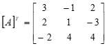
Step 3. Determine the adjoint matrix by replacing each element in \[*A*\]^T by its Cofactor.

Step 4. Divide by the scalar value of the determinant of \[*A*\] which was computed as 70 in Step 1.

if y1 = 1, y2 = 13, and y3 = 8


Cramer’s Rule
Given matrices A{x} = {b}
If the det (D) of a matrix (A) exists, and Dr is the det of the matrix obtained from A by replacing the rth column of A by the column {b}, then the solution to (1) is xr = Dr/D r = 1,2,…,n
Example of Cramer’s Rule


2.5 Vector Algebra
(reference 2.5)
2.5.1 Addition
Given vectors \(\bar{A}\) and \(\bar{B}\), where the ith component of \(\bar{A}\) is given by \(a_i\), we define addition \(\bar{A} + \bar{B}\) component-wise, such that the ith component of \(\bar{A} + \bar{B}\) is given by \(a_i + b_i\).

2.5.2 Subtraction
We define vector subtraction just as we defined vector addition above.


2.5.3 Scalar Multiplication
Given a real number, \(m\), and vectors \(\bar{A}\) and \(\bar{B}\), where the ith component of \(\bar{A}\) is given by \(a_i\), we define scalar multiplication addition \(m \bar{A}\) component-wise, such that the ith component of \(m \bar{A}\) is given by \(m a_i\).
When \(m\) and \(a+i\) are real numbers, the usual properties apply: Commutative \(m \bar{A} = \bar{A} m\). Associative \(m (n \bar{A}) = (mn) \bar{A}\). Distributive \((m + n) \bar{A} = m \bar{A} + n \bar{A}\).
When \(a+i\) are real numbers, we have the following properties that apply to vectors: Commutative \(\bar{A} + \bar{B} = \bar{B} + \bar{A}\). Associative \(\bar{A} + (\bar{B} + \bar{C}) = (\bar{A} + \bar{B}) + \bar{C}\). Distributive \(m (\bar{A} + \bar{B}) = m \bar{A} + m \bar{B}\).
2.5.4 Dot Product
Given vectors \(\bar{A}\) and \(\bar{B}\), where the ith component of \(\bar{A}\) is given by \(a_i\) and the vectors have the same dimension,\(n\), we define the dot product \(\bar{A} \cdot \bar{B}\) as follows: \[\bar{A} \cdot \bar{B} = \sum_{i=1}^{n}a_i b_i \]. For example, given three-dimensional vectors, we have: \[\bar{A} \cdot \bar{B} = a_1 b_1 + a_2 b_2 + a_3 b_3\]. The terms dot product, scalar product, and inner product usually mean the same thing.
2.5.5 Norm
The norm or vector norm, denoted \[ \left| \bar{A} \right|\], is the magnitude of the vector. We compute it thus: \[ \left| \bar{A} \right| = \sqrt{\sum_{i=1}^{n} a_i^2} \]. For example, given a three-dimensional vector in the \(xyz\) plane, we have: \[ \left| \bar{A} \right| = \sqrt{a_x^2 + a_y^2 + a_z^2} \]. The two types of notation, \(| \bar{A} |\) and \(||\bar{A}||\) are equivalent.
With this additional notation, we can also define the dot product this way: \[\bar{A} \cdot \bar{B} = \left| \bar{A} \right| \left| \bar{B} \right| \cos{\theta} \], where \(\theta\) is the angle between the vectors.


2.5.6 Vector Cross Product
The cross product is an operation on vectors in three dimensional space denoted \(\bar{A} \times \bar{B}\). We can define it in terms of matrix determinants in the following way. \[ \bar{A} \times \bar{B} = \begin{vmatrix} \hat{i} & \hat{j} & \hat{k}\\ a_x & a_y & a_z\\ b_x & b_y & b_z \end{vmatrix} \]. Expanding this expression gives us: \[ \bar{A} \times \bar{B} = \begin{vmatrix} a_y & a_z\\ b_y & b_z \end{vmatrix} \hat{i} + \begin{vmatrix} a_x & a_z\\ b_x & b_z \end{vmatrix} \hat{j} + \begin{vmatrix} a_x & a_y\\ b_x & b_y \end{vmatrix} \hat{k} \].
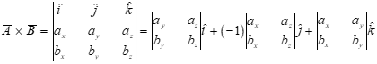


2.5.7 Vector Differentiation (raw)
Let \(\vec{r}(t)\) be a vector-valued function. We can denote this in this way: \(\vec{r}(t) = (x(t),y(t))\) is an example of a function that returns a position vector. A similar and equivalent notation is as follows: \(\vec{r}(t) = x(t)\hat{i} + y(t)\hat{j}\).
The first derivative of \(\vec{r}(t)\) with respect to time, \(t\), is a vector-valued function that denotes velocity. This function returns a vector tangential to the trajectory with a magnitude equal to the speed of the particle.
The second derivative of \(\vec{r}(t)\) with respect to time, \(t\), is a vector-valued function that denotes acceleration. This function returns a vector tangential to the velocity vector with a magnitude equal to the acceleration of the particle.
With this notation, the normal differenation operations hold for vector-valued functions along with the following. Derivative of a Sum \[\frac{d}{dt}\left( \vec{r}(t) + \vec{s}(t) \right) = \frac{d}{dt}\vec{r}(t) + \frac{d}{dt}\vec{s}(t)\].
Derivative of a Dot Product \[\frac{d}{dt}\left( \vec{r}(t) \cdot \vec{s}(t) \right) = \vec{r}(t) \cdot \frac{d}{dt}\vec{s}(t) + \frac{d}{dt}\vec{r}(t) \cdot \vec{s}(t) \].
Derivative of a Cross Product \[\frac{d}{dt}\left( \vec{r}(t) \times \vec{s}(t) \right) = \vec{r}(t) \times \frac{d}{dt}\vec{s}(t) + \frac{d}{dt}\vec{r}(t) \times \vec{s}(t)\].
Derivative of a Scalar Product If \(f(t)\) be a scalar-valued function, then \[\frac{d}{dt}\left( f(t)\vec{r}(t) \right) = f(t)\frac{d}{dt}\vec{r}(t) + \left(\frac{d}{dt} f(t)\right) \vec{r}(t)\].
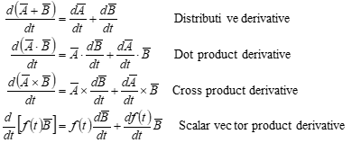
2.5.8 Motion of a point using two reference systems
Reference A can be considered the inertial frame while Rotation of the B reference relative to the A reference must be considered when observing motion with respect to the A reference system.

Note: Unit vectors are along the B system axes. Subscripts denote reference system. Reference B can be equivalent to a maneuvering aircraft.


The velocities of the particle P relative to the A and to the B references are, respectively:

These velocities can be related by noting that:

Differentiating with respect to time for the A reference,


The term is the “transport velocity” and is the only velocity if 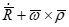
point P is rigidly attached to reference B.
where is the centripetal acceleration,
is the Coriolis acceleration, and
is the transport acceleration and is the only acceleration if point P is rigidly attached to reference B.
To get acceleration with respect to A, differentiate:


where
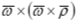
is the centripetal acceleration,

is the Coriolis acceleration, and

is the transport acceleration and is the only acceleration if point P is rigidly attached to reference B.
2.5.9 Motion of a point using one reference system
Reference A can be considered the inertial frame while
The body can be equivalent to a maneuvering aircraft.


2.6 Probability and Statistics
(reference 2.6)
Definitions:
Population: The set of all possible observations
Sample: Any subset of a population
Homogeneous Sample: The sample comes from 1 population only
Random Sample: Equal probability of selecting any member of the population Independence (of events A and B): P(A and B) = P(A)*P(B)
Sample and Population Mean (Average value): \[\mu = \bar{x} = \frac{1}{N} \sum_{i=1}^N{x_i} \]
Mode (Most commonly occurring value in a sample)
Median (middle value, 50th percentile. Half of the sample values are greater and half are smaller)
Deviation: \[d_i = x_i - \bar{x} \]
Population Variance: \[\sigma^2 = \frac{1}{N} \sum_{i=1}^N{(x_i - \bar{x}})^2 = \frac{1}{N} \sum_{i=1}^N{d_i^2}\]
Population Standard Deviation (square root of variance): \[\sigma = \sqrt{\frac{1}{N} \sum_{i=1}^N{(x_i - \bar{x}})^2} \]
Sample Standard Deviation: \[s = \sqrt{\frac{1}{N-1} \sum_{i=1}^N{(x_i - \bar{x}})^2} \]
Discrete Probability Distributions:
Uniform The probability of any outcome in a given set is the same. If there are \(N\) possible outcomes in a set, then the probability of a given outcome is \(p=1/N\). For example, when rolling a fair dice with \(N=6\) sides, the probability that the toss will result in any given side is \(p = 1/6\).
Binomial The probability that the random variable \(X = x\) in \(N\) independent events, each having probability \(p\) of success, and \(1-p\) of failure. \[P(X = k) = \binom{N}{k}p^x (1-p)^{N-x}\] where \[\binom{N}{k} = \frac{N!}{k!(N-k)!}\].
For example, tossing a fair coin N times where \(p = 1/2\) is the probability of getting a head on any toss. If \(X\) indicates the number of heads in \(N\) tosses, then we have \(P(X = x) = (1/2)^x (1/2)^{N-x}\). For \(N = 4\) we have the following table: |x |P(X=x)| |:-|:-| |\(0\)| \(1/16\)| |\(1\)| \(1/4\)| |\(3\)| \(3/8\)| |\(3\)| \(1/4\)| |\(4\)| \(1/16\)|
Continuous Distributions Continuous distributions are defined for all \(x \in [a,b]\), where \(a, b \in \mathbb{R}\) or for all \(x \in (-\infty, \infty)\), that is, the whole real number line. The probability for any single point is zero; that is, \(P(X=x) = 0\). Instead, one must work with probability on an interval, e.g., \(P(0 < x)\) or \(P(a < x < b)\).
The Normal Distribution The probability density function of the Normal Distribution is given by: \[f(x) = \frac{1}{\sqrt{2 \pi \sigma}}e^{\frac{-(x-\mu)^2}{2\sigma^2}} \].
The Standard Normal Distribution The Standard Normal Distribution is simply the Normal Distribution with \(\mu = 0\) and \(\sigma=1\).
Error Probable An interval centered at the mean that contains one-half of the distribution.
Circular Error Probable A circle centered at the mean, in a bivariate normal distribution, that contains one-half of the distribution.
Confidence Intervals An interval estimate of a statistic.
Central Limit Theorem The sample mean of data sampled from a normally distributed population is itself normally distributed with mean, \(\mu\), and variance, \(\sigma^2/\sqrt{n}\), where the population distribution is \(N(\mu,\sigma^2)\) and \(n\) is the sample size and usually \(n \geq 30\).
Hypothesis Testing Begins with an assumption (hypothesis), usually about the underlying population distribution of some measured quantity or computed error. Select values for the hypothesis and alternate hypothesis(es) that partition the sample space. Collect N samples of the population test statistic or parameter. There are two types of errors: Type 1 errors reject the hypothesis when it is true; Type II accept the hypothesis when in is false.
2.7 Standard Series (raw)
(reference 2.4)
 Taylor’s
Taylor’s
Maclaurin’s (Taylor series with a = 0 ):


 Binomial:
Binomial:
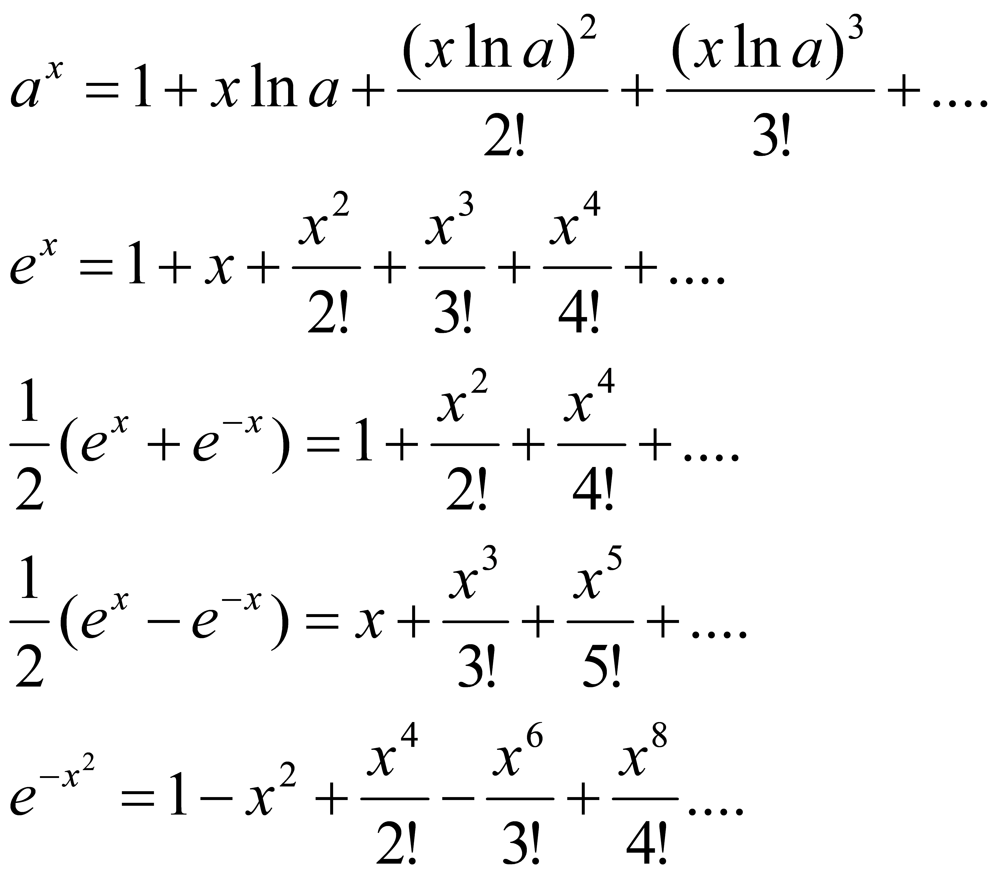Exponential:
Logarithmic:
Trigonometric:

2.8 Derivative Table (raw)
(references 2.2, 2.3)
\[*x* is the independent variable; *u* and *v* are dependent on *x; w* is dependent on *u; a* and *n* are constants; *log* is common logarithm; *ln* is logarithm to the base *e*\]


2.9 Integral Table (raw)
(references 2.2, 2.3)
x is any variable, u is any function of x, a & b are arbitrary constants.
The constant of integration, c, has been omitted from this table
but should be added to the result of every integration.
Fundamental Integrals

Expressions containing exponential and logarithmic functions

Expressions containing trigonometric functions

2.10 Laplace Table (raw)
(references 2.2, 2.3)
| time domain f(t) | frequency domain F(s)=L{f(t)} |
| 1 (step function) | 1/s (s>0) |
| t | 1/s^2 (s>0) |
 |
 |
 |
(s>0) |
 |
(s>0) |
| t^{n-} (n=1,2,.. | .) | (s>0) |
| e^{at} | (s>a) |
| te^{at} | 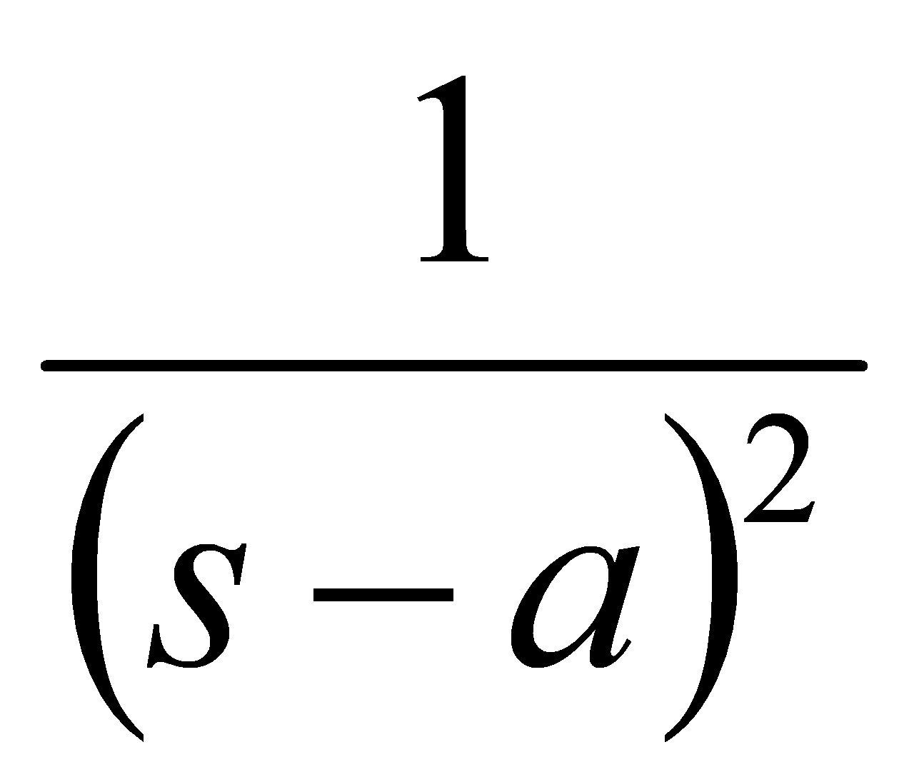 (s>a) |
| t^{n-1} e^{ax} (n=1, 2, … | ) |  (s>a) (s>a) |
| sin at |  (s>0) (s>0) |
| cos at | 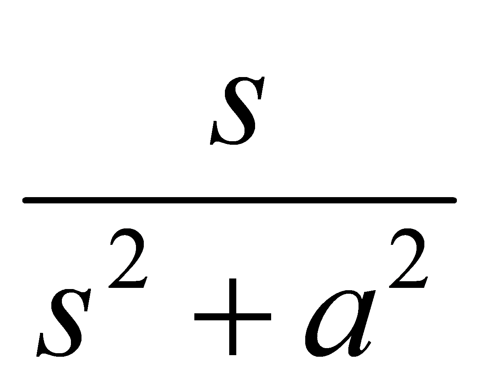 (s>0) |
| e^{bt} sin at | 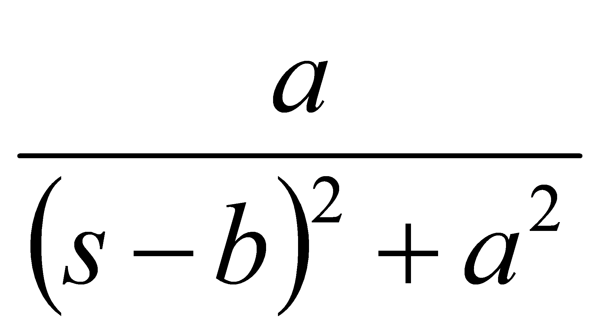 (s?b) |
| e^{bt} cos at | 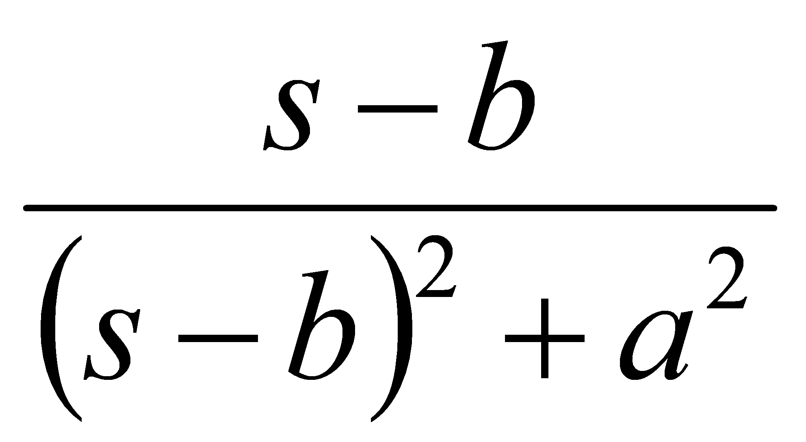 (s>b) |
| x sin ax |   (s>a) (s>a) |
| x cos ax | (s \0) |
| sinh at |
|


cosh at |
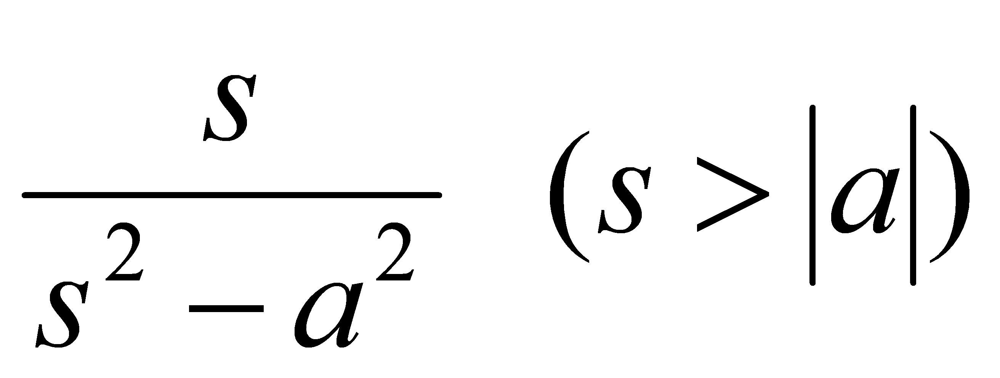 |
|---|---|
sin (at + b) |
|
cos(at + b) |
|
 |
|
 |
|
| δ (impulse function) | 1 |
square wave, period =2c
|
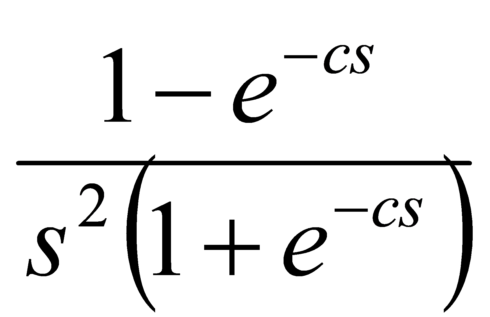 |
triangular wave, period = 2c
|
 |
at for sawtooth wave, period = c
|
 |
sin at sin bt |
|
 |
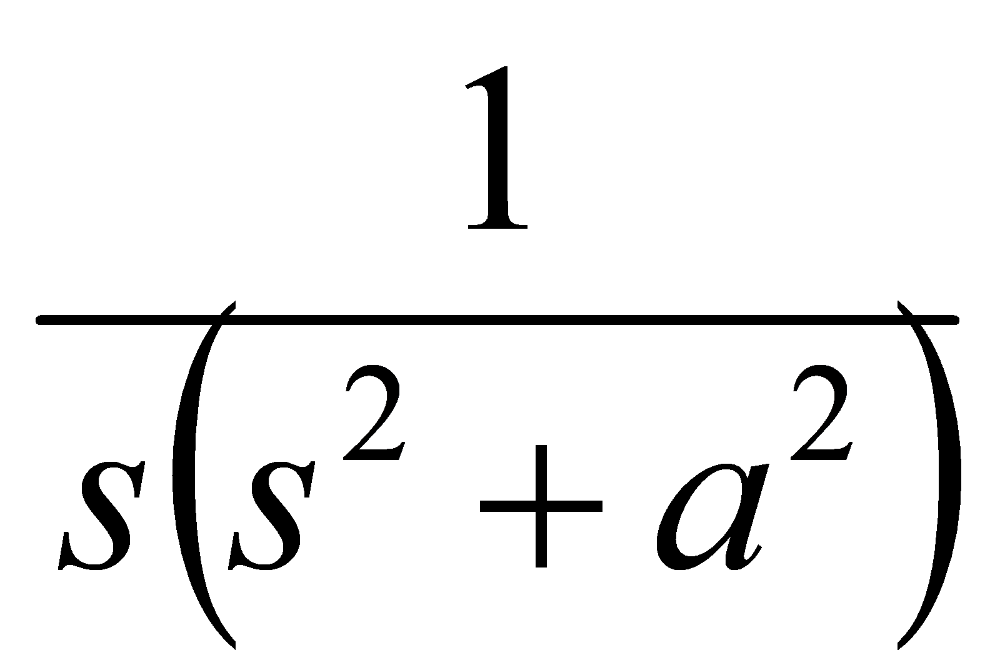 |
| 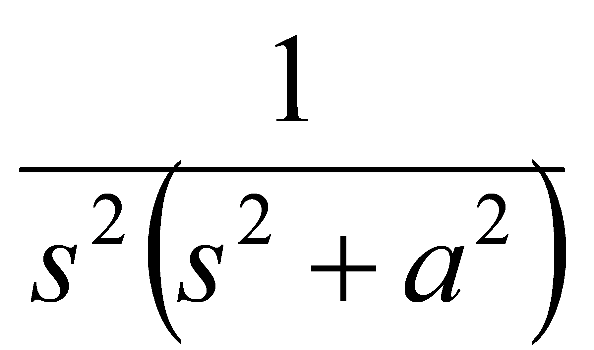 | |
| 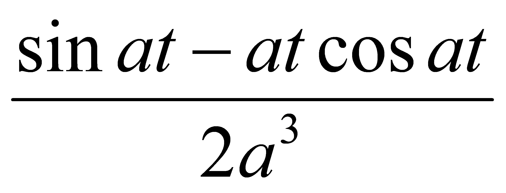 | 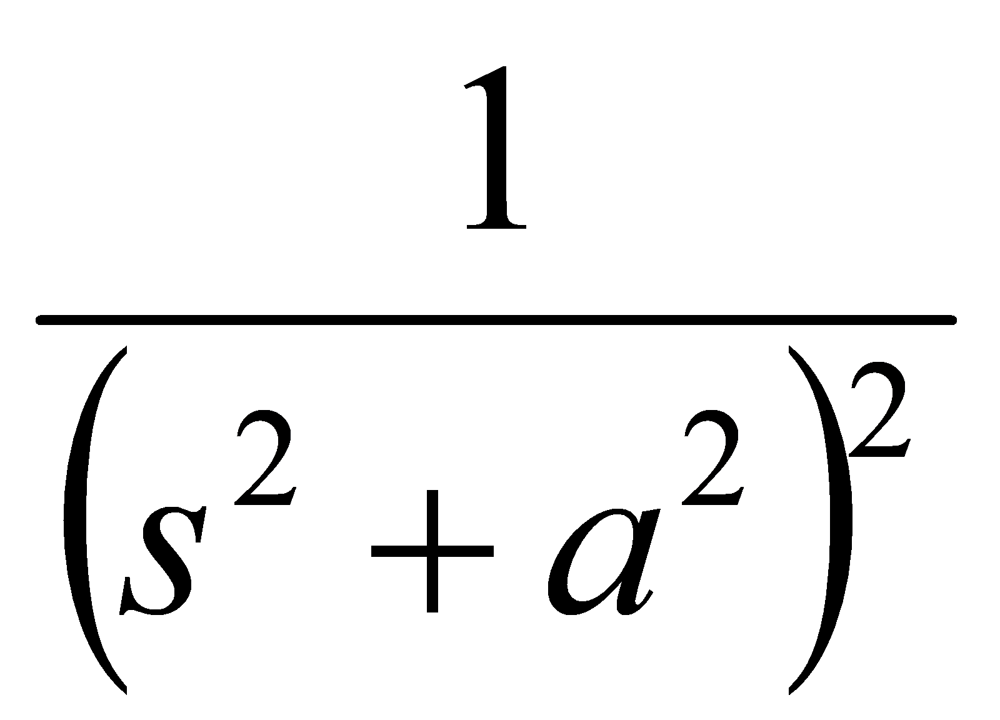 |
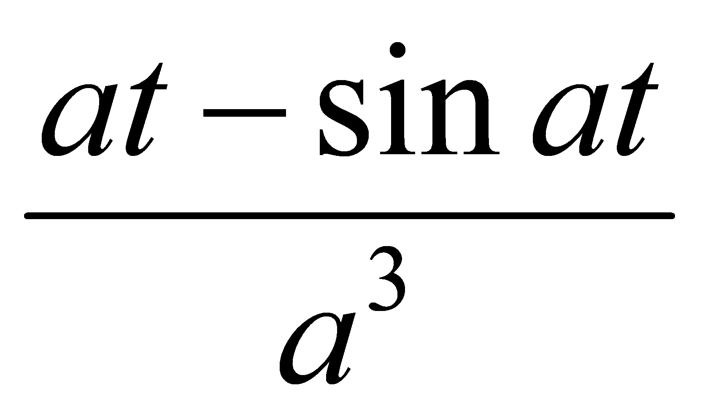
2.11 References
2.1 Burington, Richard S., “Handbook of Mathematical Tables and Formulas”, McGraw-Hill Inc., 1973.
2.2 Ayers, F., Moyer, R., “Trigonometry”, Schaum’s Outline series, McGraw-Hill Inc., 1990.
2.3 Esbach, Ovid W., “Handbook of Engineering Fundamentals”, John Wiley and Sons Inc., 1963.
2.4 Hudson, Ralph G., “The Engineers’ Manual”, John Wiley and Sons Inc., 1944.
2.5 Jones, G., Chapter 14, Vectors and Matrices, from “Flying Qualities Testing, Vol II” , National Test Pilot School, P.O. Box 658, Mojave CA, 93501.
2.6 “Flying Qualities Testing, Vol II”, 1997, National Test Pilot School, P.O. Box 658, Mojave CA, 93501.
2.7 Lewis, G., Chapter 2, Data Analysis, from “Crew station Evaluation and Data Analysis, Vol IV”, 1997, National Test Pilot School, P.O. Box 658, Mojave CA, 93501.